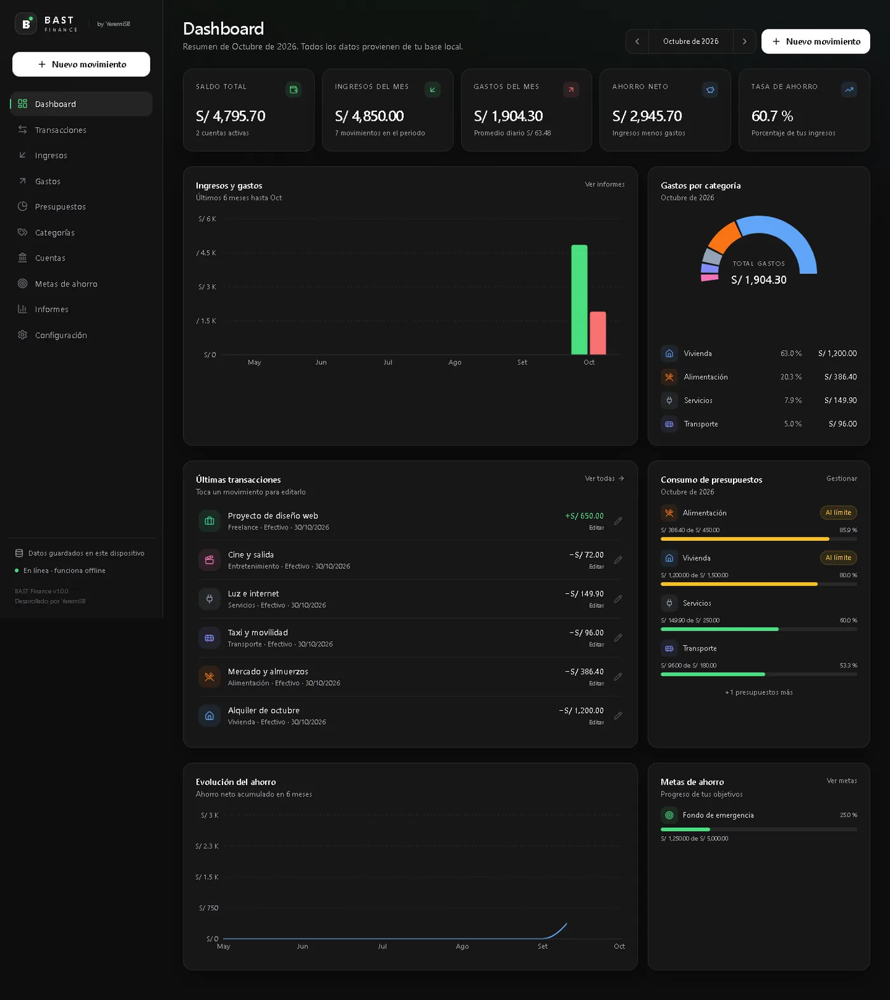
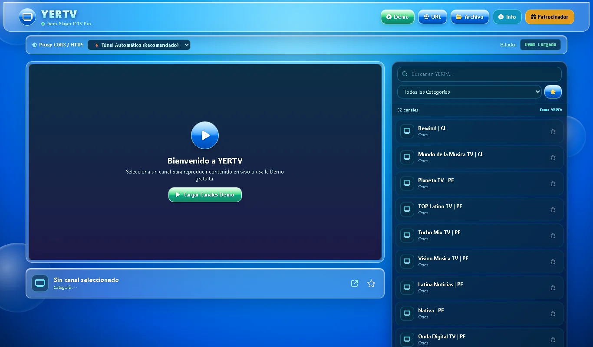

DestacadoBAST Finance
Gestor de finanzas personales offline-first: cuentas, movimientos, presupuestos, metas e informes guardados en tu dispositivo. Sin nube y sin anuncios.
Tres frentes, un mismo impulso: contar cosas. Código, imagen y mirada. Lo que he construido, lo que he fotografiado y lo que he filmado.
Lo más completo que he construido: dos apps en producción y una herramienta con clientes.

DestacadoGestor de finanzas personales offline-first: cuentas, movimientos, presupuestos, metas e informes guardados en tu dispositivo. Sin nube y sin anuncios.

Destacado
Reproductor IPTV en la nube: pegas una lista .m3u y ves el canal sin
instalar nada. Desplegado en Cloudflare Workers y empaquetado para webOS TV.
 Destacado
Destacado
App de escritorio que convierte fotos de un manuscrito o un PDF escaneado en un Word ordenado, página por página, con la IA de Gemini.